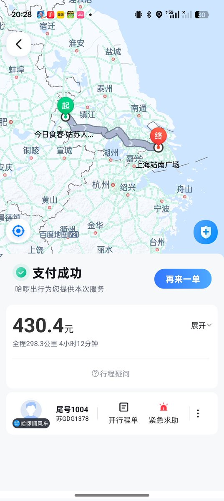
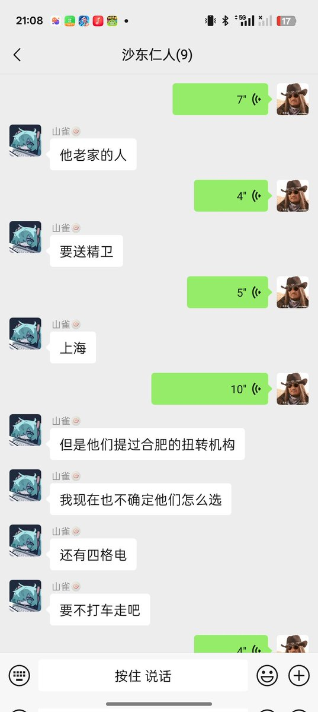

迷失的笨蛋
@appleneko2001
RT @LwrDHYyuxR22499: 后续，受害者被该校教官送往家中，试图再次将其扭送至其他扭转机构或精卫
组员及时干预，受害者今日已脱离家庭。为躲避12306等追查信息我们中途换乘了三辆车一路跑路
最终，@NaiYou9347受害者安全抵达上海，我也为其准备了1000元现…


牧鸢
@LwrDHYyuxR22499
后续，受害者被该校教官送往家中，试图再次将其扭送至其他扭转机构或精卫
组员及时干预，受害者今日已脱离家庭。为躲避12306等追查信息我们中途换乘了三辆车一路跑路
最终，@NaiYou9347受害者安全抵达上海，我也为其准备了1000元现金，用于支撑线下生活 https://t.co/atbTFkn8PF https://t.co/0XHhrquI78